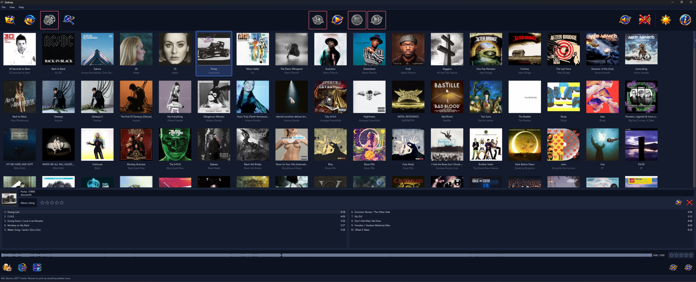
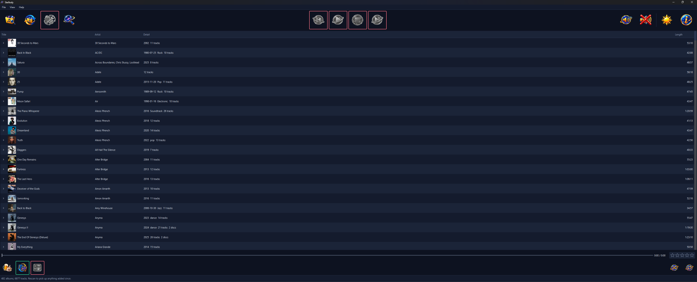

Stellody reads your music folder and never writes to it. What it learns about your library, the problems it finds in your tags and your own settings live in Stellody's own store, so a bug in this player cannot damage a file you spent years ripping and tagging.

Picking a sleeve opens that album underneath the grid, its tracks running down two columns, so the sleeves stay where they were.
Stellody was written after a player wrote tags back into a real collection, duplicating and overwriting metadata across 21 albums. So it describes a damaged tag; it never repairs one.
A track is a slice of a file rather than a file, so an album ripped as one FLAC with a cue sheet is not a special case: the queue, the transport and shuffle are written once and work for both.
Albums, discs and tracks in a list, else a grid of covers at three sizes. Picking a sleeve opens that album underneath the grid with its tracks in two columns, so the sleeves stay where they were. The view and the size are both remembered.
Type and the library narrows as you go. An album that matches keeps all of its tracks, so it reads the way it always does; the track your phrase hit is highlighted and its row flashes to take your eye to it. The whole library is read on every keystroke, measured at under half a millisecond.
Drawn along the bottom with a line marking where playback has reached. The shape builds from the left as the file is read, so a picture is there at once. A track merely highlighted draws its shape too, so you can see what it looks like before deciding to play it.
Five stars for a track, plus its own rating for an album, since a record with one poor track on it is not a poor record. Reaching the end is what counts as a play; the count sits on the track's own row so a record can be read down for what you keep coming back to.
Taken from a file beside the music or from the picture inside the audio itself, then kept so it is read once. For an album whose own files carry none, a chooser you open yourself shows every picture MusicBrainz and the Cover Art Archive have for it.
Everything, in the order the window is drawn. A focus ring belongs to a control, never to the pane holding it, which is held by a test. Stellody opens with nothing highlighted rather than a menu dropped open.
Albums, discs and tracks in one tree, ordered either way, each album carrying its own sleeve and saying what it holds: the year, the genre where there is one, how many tracks and how many discs. Expanding an album shows its tracks; the same right click menu is on every row.

The list view, with the transport across the top and the switches along the bottom strip.
Stellody sends nothing about you or your library anywhere. No scrobbling, no telemetry, no account and no identifier of any kind. Three things reach outward and each is named here rather than left to be discovered. A structural test permits exactly two modules to hold the machinery for a connection, each named in that test with what it is for.
Only when you open it, from an album's right click menu. It asks MusicBrainz and the Cover Art Archive about that album and shows you what they have.
Asks GitHub whether a newer Stellody has been published. The request carries nothing at all, not even which version you are running: it reads one small public document and the comparison happens on your machine. It says nothing unless there is something to offer.
Not really a third. The address goes outward to your browser and the browser does the asking; Stellody opens no connection of its own for it.
A folder of MP3, M4A or WMA scans to nothing today. Widening that is planned work and its size is measured rather than guessed at.
The one platform built today. The audio layer speaks to WASAPI; the port it sits behind is already the seam a second output goes in at.
No streaming, no ripping, no syncing to devices and no managing a library by rewriting its tags. Stellody does none of those and is not going to.
An equalizer, gapless transitions and accepting the repairs the health report describes are not built. Where a control for one of those is on screen it is disabled and says so.